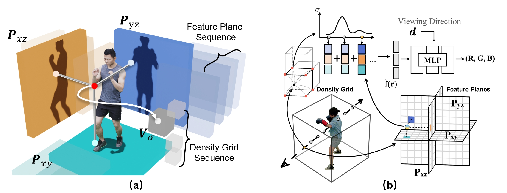
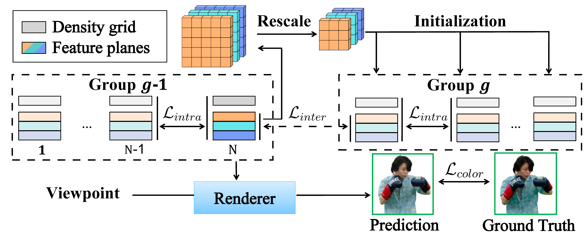
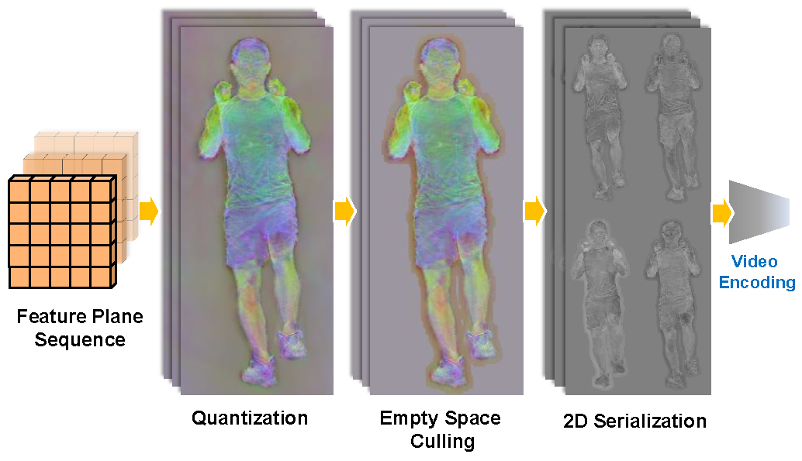
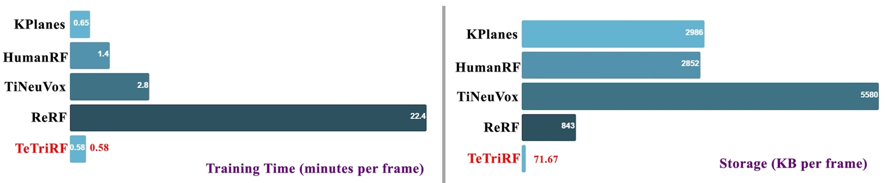

Method

(a) For each frame in the stream, we factorize the radiance field to a tri-plane and a 3D density grid.
This hybrid approach effectively captures high-dimensional appearance features in compact planes and enables efficient point sampling through the explicit density grid,
achieving a balance between compactness and representation effectiveness.
(b) Building upon this hybrid representation, we adopt a deferred shading model paired with lightweight
MLP decoders to bring real-time rendering within reach.

The proposed training strategy that groups consecutive frames from sequential data and reduces the entropy of the frame representations via imposing temporal consistency by deploying intra-group and inter-group regularizers. By sharing temporal information during training, TeTriRF is able to dramatically accelerate training compared to the per- frame training methods.

We develop a compression pipeline specifically for TeTriRF, which includes processes such as value quantization, removal of empty spaces, conversion into 2D serialization, and subsequent video encoding.
Results
Comparative analysis of training speed and storage capacity using the ReRF dataset.